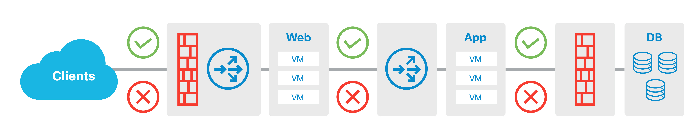
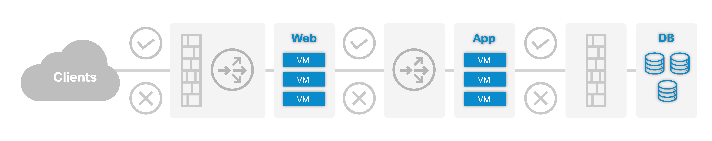
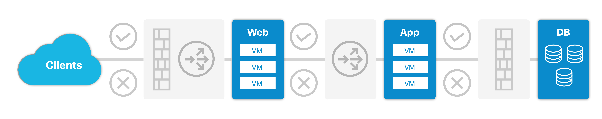
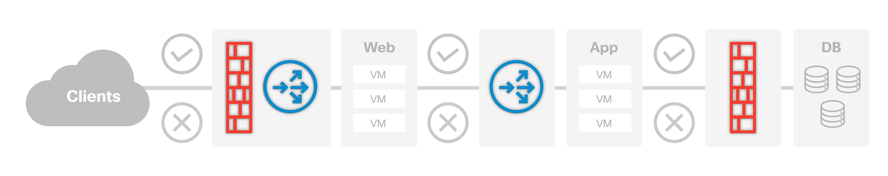
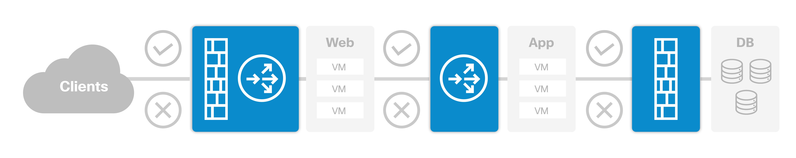
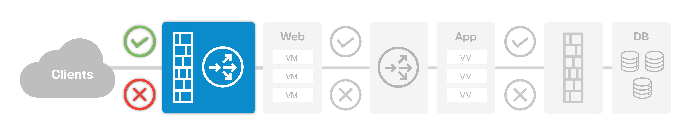

Relevant Objects and Relationships¶
Within the ACI application model, the primary object that encompasses all of the objects and their relationships to each other is called an Application Profile, or AP. Some readers are certain to think, “a 3-tier app is a unicorn,” but in this case, the idea of a literal 3-tier application works well for illustrative purposes. Below is a diagram of an AP shown as a logical structure for a 3-tier application that will serve well for describing the relevant objects and relationships.
{kind=link}
From left to right, in this 3-tier application there is a group of clients that can be categorized and grouped together. Next there is a group of web servers, followed by a group of application servers, and finally a group of database servers. There exist relationships between each of these independent groups. For example, from the clients to the application servers, there are relationships that can be described in the policy which can include things such as QoS, ACLs, Firewall and Server Load Balancing service insertion. Each of these things is defined by managed objects, and the relationships between them are used to build out the logical model, then resolve them into the hardware automatically.
Endpoints are objects that represent individual workload engines (i.e. virtual or physical machines, etc.). The following diagram emphasizes which elements in the policy model are endpoints, which include web, application and database virtual machines.
{kind=link}
These endpoints are logically grouped together into another object called an Endpoint Group, or EPG. The following diagram highlights the EPG boundaries in the diagram, and there are four EPGs - Clients, Web servers, Application servers, and Database servers.
{kind=link}
There are also Service Nodes that are referenceable objects, either physical or virtual, such as Firewalls, and Server Load Balancers (or Application Delivery Controllers/ADC), with a firewall and load balancer combination chained between the client and web EPGs, a load balancer between the web and application EPGs, and finally a firewall securing traffic between the application and database EPGs.
{kind=link}
A group of Service Node objects can be logically chained into a sequence of services represented by another object called a Service Graph. A Service Graph object provides compound service chains along the data path. The diagram below shows where the Service Graph objects are inserted into a policy definition, emphasizing the grouped service nodes in the previous diagram.
{kind=link}
With objects defined to express the essential elements of the application, it is possible to build relationships between the EPG objects, using another object called a Contract. A Contract defines what provides a service, what consumes a service and what policy objects are related to that consumption relationship. In the case of the relationship between the clients and the web servers, the policy defines the communication path and all related elements of that. As shown in the details of the example below, the Web EPG provides a service that the Clients EPG consumes, and that consumption would be subject to a Filter (ACL) and a Service Graph that includes Firewall inspection services and Server Load Balancing.
{kind=link}
A concept to note is that ACI fabrics are built on the premise of a whitelist security approach, which allows the ACI fabric to function as a semi-stateful firewall fabric. This means communication is implicitly denied, and that one must build a policy to allow communication between objects or they will be unable to communicate. In the example above, with the contract in place as highlighted, the Clients EPG can communicate with the Web EPG, but the Clients cannot communicate with the App EPG or DB EPGs. This is not explicit in the contract, but native to the fabric’s function.